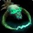
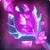

Wand of Prismatic Focus
Wand of Prismatic FocusWand of Prismatic Focus193 to 360 damage, speed 1.5, 21 stamina, 25 spell damage, 25 healing power, 13 spell hit rating (1.03%)Drops from Gurtogg Bloodboil, Black Temple
193 to 360 damage, speed 1.5, 21 stamina, 25 spell damage, 25 healing
power, 13 spell hit rating (1.03%)
Drops from Gurtogg Bloodboil, Black Temple
What influencers say
Creators disagree about this item
Zatar (Classic Wow Builds)
Zatar (Classic Wow Builds) · 58:50
67k views
Puts it on Shadow Priest and warlock, not mage
He calls the wand best in slot for priests, usable by a warlock still
missing the tier five hit wand although that older wand is better, and
says mages still prefer their own wand.
Joardee
Joardee · 99:02
23k views
Argues against it
He dismisses the wand outright, calling it awful and at best something
for a stamina set.
Drue
Drue · 20:10
6k views
Puts it on Shadow Priest
He notes this wand carries more spell damage while the competing wand
trades two spell damage for thirteen crit, and says he would definitely
take this one if in a position to get it.
Showing all 4 spec cards.
No specs are selected, so no cards are showing. Use Show every spec to bring all of them back.
Arcane Mage
StandingUpgrade
Constraints
Spell hit cap16%spells
Arcane Focus-10%
Gear needs6%
Entry set6.6%clear
by 0.6%
Tier set, Tier 6 legs6.1%clear
by 0.1%
No crit cap.
Global cooldown floor at 50% spell haste, which nothing rostered reaches
from gear this phase.
Delta
Wand of Prismatic FocusWand of
Prismatic Focus193 to 360 damage, speed 1.5,
21 stamina, 25 spell damage, 25 healing power, 13 spell hit rating
(1.03%)Drops from Gurtogg
Bloodboil, Black Temple in Arcane Mage terms EPV 17.10
| Stat | Over best pre-phase off-piece,
Magtheridon's Lair
 Eredar Wand of ObliterationEredar Wand of Obliteration177 to 330 damage, speed 1.5, 10 stamina, 11 intellect, 16 spell damage, 16 healing power, 14 spell crit rating (0.63%)Drops from Magtheridon, Magtheridon's Lair EPV 20.91 |
|
|---|---|---|
| Change | Converted | |
| stamina | +11 | |
| intellect | -11 | -0.16% spell crit · -3.16 spell damage |
| spell damage | +9 | |
| healing power | +9 | |
| spell hit | +13 | +1.03% |
| spell crit | -14 | -0.63% |
| Stat Highlights (Total Change) | -0.79% spell crit +5.84 spell damage +9 healing power +1.03% spell hit | |
No Tier 6 and no best Phase 3 off-piece and no Tier 5 is ranked for this
spec in this slot, so that comparison is not shown. A weapon the
workbook does not rank cannot be compared against, and a spec with no
captured gear set has nothing recorded to carry in.
Shadow Priest
StandingUpgrade
Constraints
Spell hit cap16%spells
Shadow Focus-10%
Gear needs6%
Entry set7.3%clear
by 1.3%
Tier set, Tier 6 head and shoulder and
chest and hands7.9%clear by 1.9%
No crit cap.
Part of this spec's damage is periodic, and periodic damage cannot crit
in this patch, so crit reaches less of its output than the character
sheet suggests.
Global cooldown floor at 50% spell haste, which nothing rostered reaches
from gear this phase.
Delta
Wand of Prismatic FocusWand of
Prismatic Focus193 to 360 damage, speed 1.5,
21 stamina, 25 spell damage, 25 healing power, 13 spell hit rating
(1.03%)Drops from Gurtogg
Bloodboil, Black Temple in Shadow Priest terms EPV 35.00
| Stat | Over best pre-phase off-piece,
Tempest Keep
 Wand of the Forgotten StarWand of the Forgotten Star186 to 346 damage, speed 1.5, 23 spell damage, 23 healing power, 11 spell hit rating (0.87%), 14 spell crit rating (0.63%)Drops from High Astromancer Solarian, Tempest Keep EPV 33.97 |
|
|---|---|---|
| Change | Converted | |
| stamina | +21 | |
| spell damage | +2 | |
| healing power | +2 | |
| spell hit | +2 | +0.16% |
| spell crit | -14 | -0.63% |
| Stat Highlights (Total Change) | +2 spell damage +2 healing power +0.16% spell hit -0.63% spell crit | |
No Tier 6 and no best Phase 3 off-piece and no Tier 5 is ranked for this
spec in this slot, so that comparison is not shown. A weapon the
workbook does not rank cannot be compared against, and a spec with no
captured gear set has nothing recorded to carry in.
Affliction Warlock
StandingUpgrade
Constraints
Spell hit cap16%spells
Totem of Wrath-3%
Gear needs13.1%
The Suppression talent does not cover this spec's filler spell, so none
of it counts.
Entry set16.1%clear
by 3%
Tier set, Tier 6 head and shoulder and
hands18.3%clear by 5.2%
No crit cap.
Part of this spec's damage is periodic, and periodic damage cannot crit
in this patch, so crit reaches less of its output than the character
sheet suggests.
Global cooldown floor at 50% spell haste, which nothing rostered reaches
from gear this phase.
Delta
Wand of Prismatic FocusWand of
Prismatic Focus193 to 360 damage, speed 1.5,
21 stamina, 25 spell damage, 25 healing power, 13 spell hit rating
(1.03%)Drops from Gurtogg
Bloodboil, Black Temple in Affliction Warlock terms EPV 42.20
| Stat | Over best pre-phase off-piece, Tempest Keep Wand of the Forgotten StarWand of the Forgotten Star186 to 346 damage, speed 1.5, 23 spell damage, 23 healing power, 11 spell hit rating (0.87%), 14 spell crit rating (0.63%)Drops from High Astromancer Solarian, Tempest Keep EPV 45.84 | |
|---|---|---|
| Change | Converted | |
| stamina | +21 | |
| spell damage | +2 | |
| healing power | +2 | |
| spell hit | +2 | +0.16% |
| spell crit | -14 | -0.63% |
| Stat Highlights (Total Change) | +2 spell damage +2 healing power +0.16% spell hit -0.63% spell crit | |
No Tier 6 and no best Phase 3 off-piece and no Tier 5 is ranked for this
spec in this slot, so that comparison is not shown. A weapon the
workbook does not rank cannot be compared against, and a spec with no
captured gear set has nothing recorded to carry in.
Destruction Warlock
StandingUpgrade
Constraints
Spell hit cap16%spells
Totem of Wrath-3%
Gear needs13.1%
No hit talent exists for this spec.
Entry set13.5%clear
by 0.4%
Tier set, Tier 6 head and shoulder and
hands15.4%clear by 2.3%
No crit cap.
Global cooldown floor at 50% spell haste, which nothing rostered reaches
from gear this phase.
Delta
Wand of Prismatic FocusWand of
Prismatic Focus193 to 360 damage, speed 1.5,
21 stamina, 25 spell damage, 25 healing power, 13 spell hit rating
(1.03%)Drops from Gurtogg
Bloodboil, Black Temple in Destruction Warlock terms EPV 50.98
| Stat | Over best pre-phase off-piece, Tempest Keep Wand of the Forgotten StarWand of the Forgotten Star186 to 346 damage, speed 1.5, 23 spell damage, 23 healing power, 11 spell hit rating (0.87%), 14 spell crit rating (0.63%)Drops from High Astromancer Solarian, Tempest Keep EPV 54.78 | |
|---|---|---|
| Change | Converted | |
| stamina | +21 | |
| spell damage | +2 | |
| healing power | +2 | |
| spell hit | +2 | +0.16% |
| spell crit | -14 | -0.63% |
| Stat Highlights (Total Change) | +2 spell damage +2 healing power +0.16% spell hit -0.63% spell crit | |
No Tier 6 and no best Phase 3 off-piece and no Tier 5 is ranked for this
spec in this slot, so that comparison is not shown. A weapon the
workbook does not rank cannot be compared against, and a spec with no
captured gear set has nothing recorded to carry in.